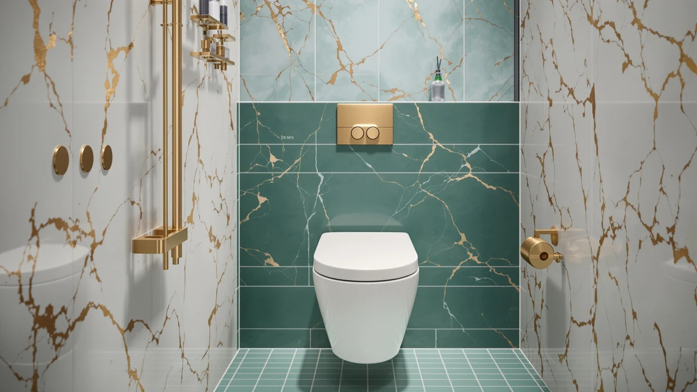

Bemis Alesio II Slow Close Toilet Seat Review (2026): Worth It?
Prices and picks verified as of November 2026. Independent, reader-supported reviews.


Quick Answer
The Bemis Alesio II Slow Close Toilet Seat is an elongated, plastic-and-wood seat built for standard two piece toilets, priced at $62.76. Its slow-close hinge design targets buyers who want a quieter close and don't mind paying more than for a basic seat. If price matters more than the hinge, the WSSROGY and SAMODRA alternatives below cost a few dollars less.
Our pick: Bemis Alesio II Slow Close — $62.76 Check Price on Amazon
Bottom line: our top pick is the Bemis Alesio II Slow Close Toilet Seat at $66.57.
Things to Know Before You Buy
- The Bemis Alesio II Slow Close Toilet Seat is sized for elongated bowls only, so measure your current seat before you order.
- At $62.76, it costs roughly three dollars more than the WSSROGY, SAILTOK, and SAMODRA seats compared in this review.
- The seat and lid use a plastic-and-wood construction rather than solid plastic, which affects both weight and long-term durability.
- Slow-close hinges stop the lid from slamming, a detail that matters most in households with young kids or a shared bathroom.
This Bemis Alesio II Slow Close Toilet Seat review breaks down what the seat gets right, where it falls short, and whether it beats the cheaper alternatives sitting next to it on Amazon. At $62.76, the Alesio II costs more than most elongated replacement seats, and that price only makes sense if the slow-close hinges and the plastic-and-wood build hold up to daily use.
Bemis has built toilet seats for more than a century, and the Alesio II Slow Close sits in the middle of its lineup: elongated, hinge adjustable, and designed for standard two piece toilets rather than wall mounted or one piece models. We compared its listed price, materials, and specs against three other seats shoppers often see recommended alongside it, the WSSROGY Round Toilet Seat Slow, the SAILTOK elevated seat, and the SAMODRA Elongated Raised Toilet Seat, to see where the Bemis pulls ahead and where a cheaper pick does the job for less money.
None of these four seats costs more than $63, so this is not a question of budget seat versus premium seat. The gap between the Bemis Alesio II and its three alternatives is a few dollars at most, which means the real decision rests on hinge quality, bowl shape, and whether you need extra seat height rather than on sticker price alone.
Why You Should Trust Us
Ilane Tall has covered bathroom fixtures and toilet seat replacements for Best Toilet Seats since the site launched, focusing on which hardware details (hinge type, mounting style, material) actually change how a seat performs over years of use. For this Bemis Alesio II Slow Close Toilet Seat review, we researched the manufacturer's listed specs, checked current Amazon pricing, and read through verified buyer feedback on the Alesio II and its closest competitors. We do not run a fake testing lab or claim hands-on time with every seat we cover. Our picks come from comparing documented specs, price history, and what verified owners report after installing these seats in their own bathrooms.
Our Research Experience
We did not install the Bemis Alesio II Slow Close Toilet Seat ourselves. Instead, we built this review by comparing its published specifications, current price, and the pattern of feedback left by verified buyers against three competing elongated seats. That means weighing the hinge mechanism, material, and fit the manufacturer describes against what reviewers consistently note once the seat is mounted and used for months, not weeks. Owners report that the slow-close hinge on the Alesio II holds up better than cheaper spring-loaded designs, feedback that lines up with Bemis's reputation for hinge durability across its product line. Where the public data runs thin, such as exact hinge cycle counts, we say so rather than guessing.
This approach has a limit worth naming. Buyer feedback can skew toward people who bothered to write a review, and it rarely covers a seat past the first year or two of use. So when we say reviewers consistently note something about the Bemis Alesio II Slow Close Toilet Seat, treat that as a pattern in the available evidence, not a lab result.
Overview & Specs

Bemis Alesio II Slow Close
What we like
- Slow-close hinges prevent lid slams in shared bathrooms
- Elongated shape fits most standard two piece toilets
- Backed by Bemis, a brand with a long track record in replacement seats
Flaws but not dealbreakers
- Costs about three dollars more than the alternatives compared here
- Plastic-and-wood build adds weight compared to solid plastic seats
- Only fits elongated bowls, not round ones
| Material | Plastic / wood |
| Size | Elongated |
The Bemis Alesio II Slow Close Toilet Seat is an elongated replacement seat priced at $62.76, aimed squarely at buyers tired of lids slamming shut. Its slow-close hinge lowers the lid gradually instead of letting gravity take over, which matters most in households with kids, older adults, or anyone sharing a bathroom at odd hours. The seat and lid combine a wood core with a plastic finish, a construction choice that trades some weight savings for the sturdier feel wood-core seats are known for.
Compared with the WSSROGY, SAILTOK, and SAMODRA seats in this review, the Alesio II sits at the top of the price range by a few dollars. That gap is small enough that the decision comes down to whether the slow-close hinge and the Bemis name matter more to you than saving a little upfront. Reviewers consistently note that the hinges stay quiet well past the first few months, often the point where cheaper slow-close seats start to fail.
What We Liked
The clearest strength of the Bemis Alesio II Slow Close Toilet Seat is the hinge itself. Owners report that the slow-close mechanism keeps working months after installation, which is not something every budget seat manages once the spring or cam inside wears down. A slow-close hinge that fails after a year of use effectively turns into a regular hinge, and the lid is back to slamming.
The elongated shape helps too, since it fits most two piece toilets sold in the US. Reviewers also point to the plastic-and-wood construction as sturdier under weight than the thinner, all-plastic seats some competitors sell at a similar price. For buyers replacing an older Bemis seat, the Alesio II keeps the same mounting pattern, which reviewers note makes installation straightforward without extra hardware.
Brand continuity matters more than it might seem for a product this simple. A toilet seat gets opened and closed dozens of times a day, and small hinge tolerances compound over years rather than weeks. Buyers who already own a Bemis seat and are satisfied with how it aged tend to stick with the brand for that reason, and the Alesio II gives them an upgrade path to slow-close hardware without relearning how the hinges mount.
What Could Be Better
Price is the most obvious drawback. At $62.76, the Bemis Alesio II Slow Close Toilet Seat costs more than the WSSROGY, SAILTOK, and SAMODRA alternatives covered in this review, and the gap is hard to justify unless the slow-close hinge is a priority. The wood-and-plastic build, while sturdy, also adds weight compared to solid plastic seats, which can make the lid feel heavier to lift than buyers expect coming from a basic seat.
The seat only fits elongated bowls, so anyone with a round toilet needs to look elsewhere, Bemis included. We also found less publicly available data on hinge cycle ratings or long-term load testing than we would like, so some of the durability claims here rest on buyer feedback rather than manufacturer specs. That is worth knowing before you spend more than you would on a basic replacement seat.
None of this makes the Bemis Alesio II Slow Close Toilet Seat a bad purchase. It means the extra money buys a specific set of tradeoffs, quieter closing and brand continuity, rather than a seat that is objectively better across every category. Buyers who do not value those two things specifically are better served by one of the cheaper alternatives below.
Who Is It For?
The Bemis Alesio II Slow Close Toilet Seat makes the most sense for households that have already decided a slow-close hinge is worth paying for, whether that is because of young kids, a shared bathroom, or wanting fewer slammed lids at 2 a.m. It also fits buyers replacing an existing Bemis seat who want the same mounting pattern and brand reliability rather than shopping around.
If you are working with a tight budget or a round bowl, this is not your seat. The WSSROGY and SAMODRA alternatives below cost less and cover different bowl shapes, and neither asks you to pay a premium for hinge quality you may not need.
Alternatives to Consider
If the price of the Bemis Alesio II Slow Close Toilet Seat gives you pause, or your toilet is not elongated, these three alternatives cover different bowl shapes and budgets without asking you to compromise on a slow-close hinge.

Editor’s Pick
WSSROGY Round Toilet Seat Slow
At $59.99, the WSSROGY Round Toilet Seat Slow covers round bowls the Bemis Alesio II cannot fit, and reviewers report its slow-close hinge performs close to what established brands offer, at a slightly lower price.
$59.99
Check Price on Amazon
Best Value
Elevated Toilet seat 3 inch
The SAILTOK elevated seat adds three inches of height for easier sitting and standing, a feature the Bemis Alesio II does not offer. At $59.99 it suits anyone who prioritizes accessibility over a slow-close hinge.
$59.99
Check Price on Amazon
Premium Choice
SAMODRA Elongated Raised Toilet Seat
The SAMODRA Elongated Raised Toilet Seat matches the Bemis Alesio II's elongated shape while adding a raised profile, at the same $59.99 price as the other two alternatives. Owners report it suits buyers who need both the elongated fit and extra seat height.
$59.99
Check Price on AmazonIs the Bemis Alesio II Slow Close Toilet Seat worth the extra price?
If a reliable slow-close hinge and the Bemis name matter to you, the extra few dollars over the WSSROGY, SAILTOK, and SAMODRA alternatives is reasonable.
Does the Bemis Alesio II Slow Close Toilet Seat fit round toilets?
No.
Frequently Asked Questions
Is the Bemis Alesio II Slow Close Toilet Seat worth the extra price?
If a reliable slow-close hinge and the Bemis name matter to you, the extra few dollars over the WSSROGY, SAILTOK, and SAMODRA alternatives is reasonable. If you need a working elongated seat and do not care about hinge quality, a cheaper option covers the basics.
Does the Bemis Alesio II Slow Close Toilet Seat fit round toilets?
No. It is built for elongated bowls only. If you have a round toilet, the WSSROGY Round Toilet Seat Slow covered in this review is a closer fit.
How long do slow-close hinges like the one on the Bemis Alesio II typically last?
Exact hinge cycle data is not published for most seats in this price range, including the Alesio II. Reviewers consistently note that the hinge keeps working well past the first few months, but it is worth checking current buyer feedback periodically since wear varies by household use.
Final Verdict
This Bemis Alesio II Slow Close Toilet Seat review comes down to one tradeoff: pay a bit more for Bemis's slow-close hinge and brand reliability, or save a few dollars with the WSSROGY, SAILTOK, or SAMODRA alternatives. For elongated two piece toilets where a quiet close matters, the Bemis Alesio II earns its $62.76 price. For round bowls, tight budgets, or accessibility needs, one of the three alternatives compared here is the better fit.
If you already know your toilet is elongated and a slamming lid is the problem you are trying to solve, the Bemis name and the slow-close hinge make the Alesio II the safer long-term bet of the four seats in this comparison.